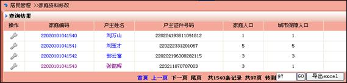
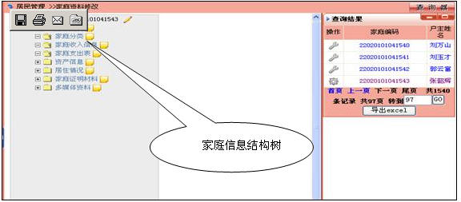

家庭资料修改
点击菜单“居民管理>>家庭资料修改”,进入家庭资料修改页面，通过查询器检索出家庭列表，如下所示

点击“”图标，读取此户家庭信息如下图

家庭信息树描述一户家庭所具有的属性，这些属性由系统管理模块维护。家庭信息树有两种节点：一种为“列表节点”，一种为“单体节点”。
列表节点：需要多条记录描述的信息，如成员列表；
单体节点：只需要一条记录描述的信息，如家庭收入信息。
例如：点击家庭成员列表,每个家庭有多个家庭成员组成。
新建家庭